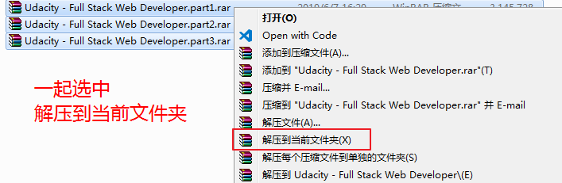
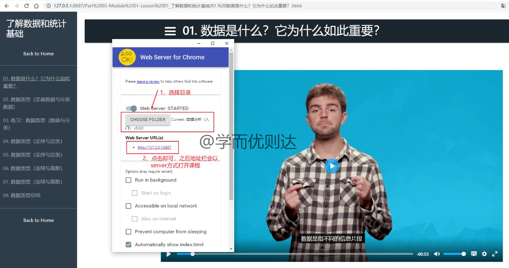

欢迎来到【学而优则达】 学而优则达 ，以下为课程的使用说明。
若有多个压缩包，请下载完全后，再一起解压到当前文件夹即可。

PS：Mac系统建议用The Unarchiver解压，AppStore里就有。（若用其它解压软件，可能出现解压后文件为空的情况，即解压后的文件夹比压缩包还小。）

不会科学上网的同学，可百度【谷歌上网助手】，或直接下载 火狐浏览器v67版 使用，其它浏览器目前都不支持。
观看视频时点击网页右下角的【cc】按钮可加载字幕，点击【齿轮】按钮可选择字幕语种和播放速度。
课程中的 workspace 部分，使用网盘中的代码即可。
根据代码语言在本地安装对应的运行环境即可，以 Python 为例，百度安装 Anaconda 即可。 如果您不熟悉，可百度或下载资料 Python环境配置 学习，提取码：9ygv。
如果某些Lesson无法打开，原因及解决方案如下：
文件夹的路径太长。将文件夹整体往外层放即可。
文件名里有 & 等特殊符号。进入子文件夹打开 index.html 即可。